この素材類は作者が自分のＷＷＡを作ったときの副産物や流用
もしくは脳がメルトダウンしそうになったときに暇つぶしで打ったものです。
かといって著作権を放棄してるわけでもなく
といっても素材利用規定なんていう物々しいものではありませんが
ちょっとだけ使うときはお約束があります。
重要なものから上に書いていきます。
※この素材集では一部に
キャラバンサークルの画像の素材を加工した物を配布しております。
何か問題がありましたら削除します。
無断再配布は禁止とします。なお、加工していたとしても無断ではお断りします。
加工での再配布したい場合は一言ご連絡ください
お約束②
画像をインターネット（ホームページ）上で使用する場合は当ＨＰの素材を使用したことを明記しておいてください
素材使用報告は任意です
お約束③
直リンクはやめてください、ちゃんとDLして使ってください
| 背景 | 人物 | 建物 |
| 道具 | その他 | 余白 |

クレパス
雪のステージで障害物としてどうぞ
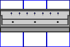
流し台
台所とか料理場とかに？
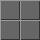
白や黒のスタイリッシュな床
白い床は研究所とかに
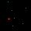 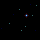 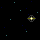
宇宙空間
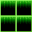 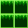
宇宙空間での足場
組み合わせると
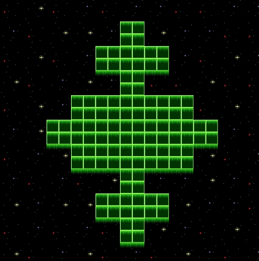
こんな感じに
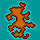
なんでこんなの作ったのかよく分からない島
作った人物画像はほとんどピースピースさんの加工品なんで公開することができません・・・
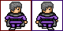
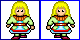
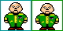
いろいろ
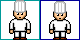
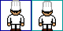
コックさん
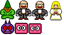
若気の至り達
姫ってリアルで描くと怖いね
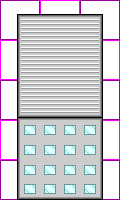
ビル ポケモンサファイアのビルを参考にしたつもりだが途中から面倒くさくて参考にならなかった。
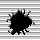 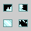
壊れたverも
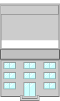
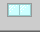 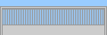
改良形ビル、念願（？）の柵も付けられました。
白い部分を透過してくださいね
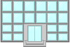 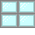
全面ミラービルにしてみた（笑）
上の部分は共有です。
多分これがメイン
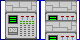
スパコン１
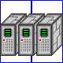
スパコン２ こっちは使い勝手が悪い
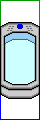
コールド・スリープ・カプセル
透けてるけどねｗ
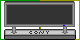 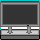
液晶テレビ ＳＯ●ＹではなくＣ●ＮＹ製
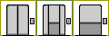
エレベーター
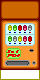
自販機 実はスパイジュースと書いてある。
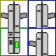
自動改札 ここから駅設備のターン
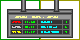

行き先案内的な物
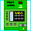
自動券売機 多分下手糞
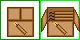 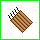
ノーベルさんが発明したあれ 下手に使ったらお釈迦
紙と鉛筆
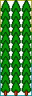
デフォルトの木を小さくしてみた。フィールドマップとかに使えるかも
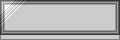
金属のテーブル
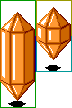
クリスタル 手間がかかった割りにイマイチ
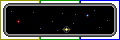
宇宙船の窓とかにどーぞ
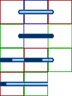
ゲージ コマンドバトルに使おうとしたらシステム的に挫折。
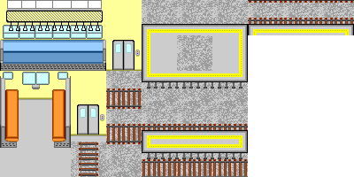
電車の車内とホーム画像
肝心の電車画像は『Coden City』のを使うのをオススメします。
『Coden City』に無いクロスシート以外は向こうの画像を使ったほうが得策かも
※これだけＰＮＧ画像なんで注意！
数字

ひび割れ 壊れているところとかに
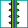
謎のビーム